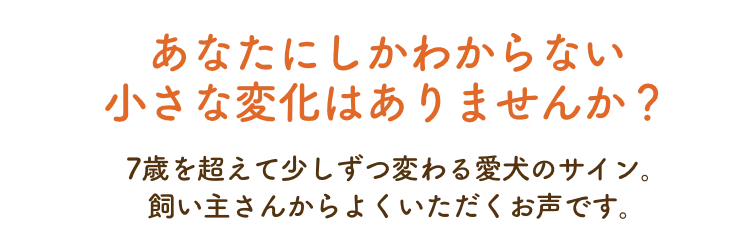
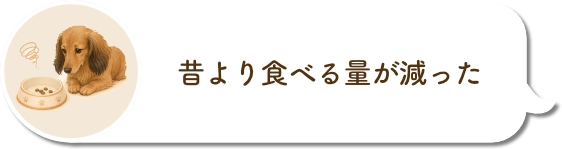
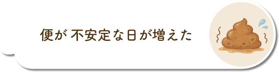
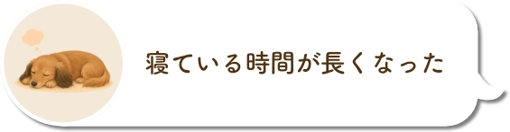
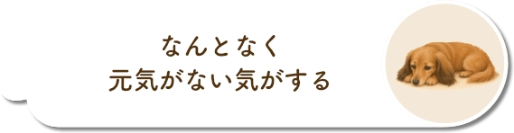
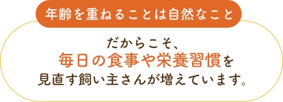


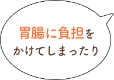


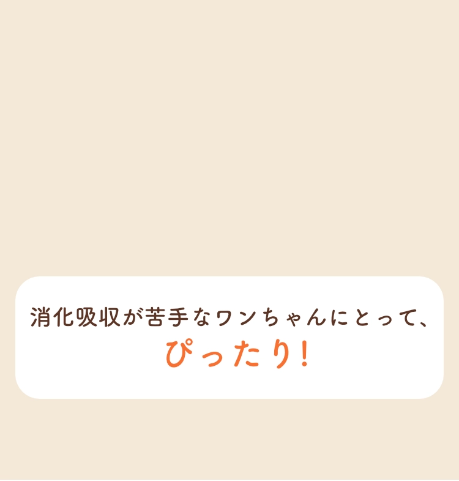
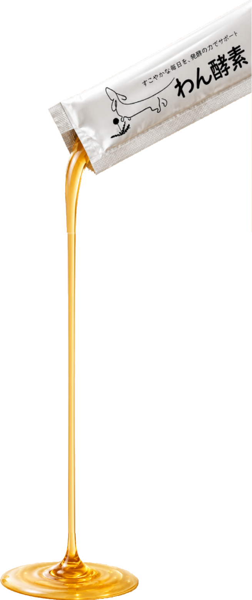

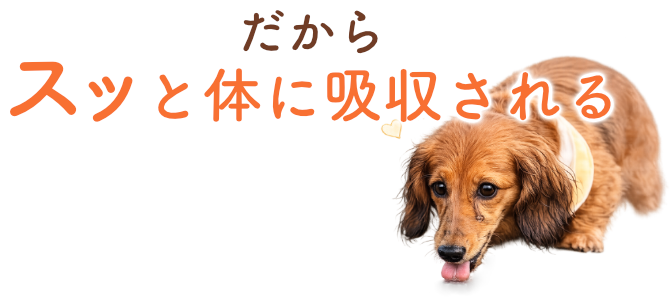
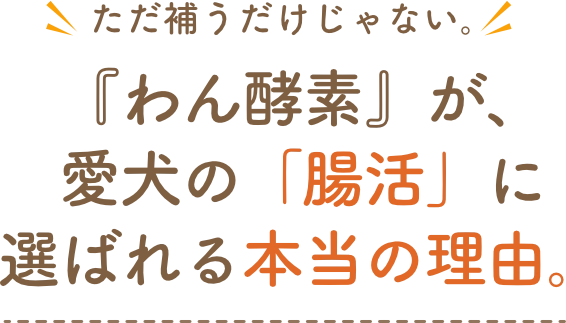
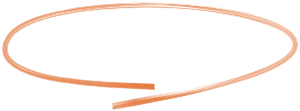
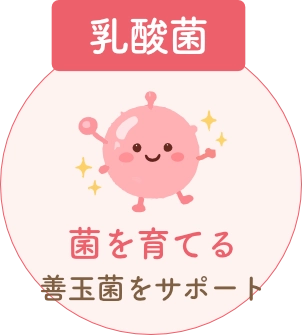
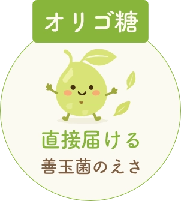
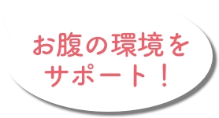
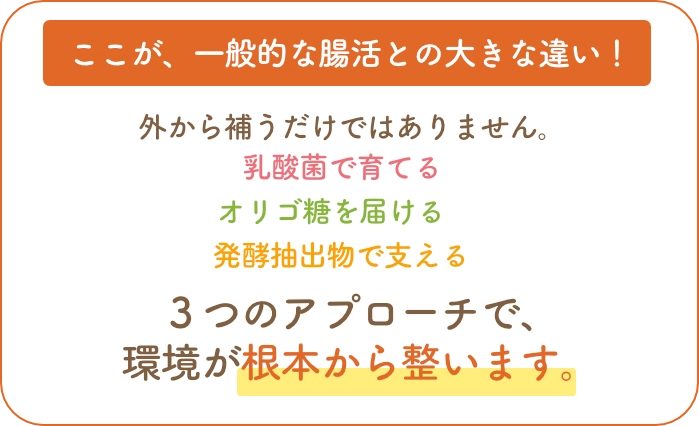
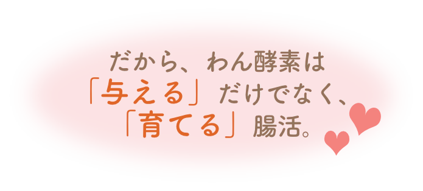

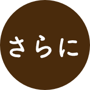
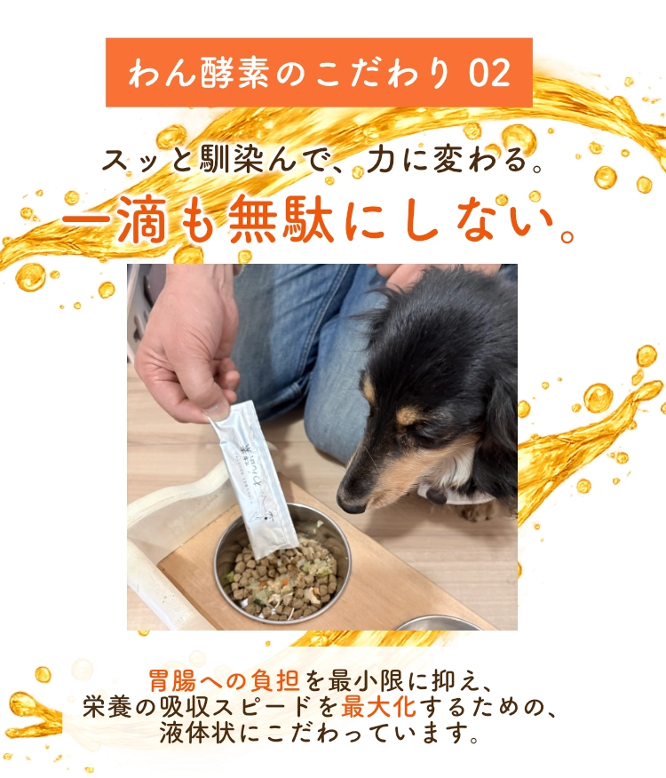

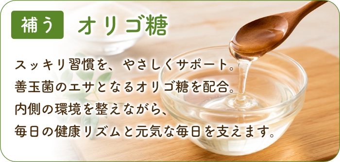


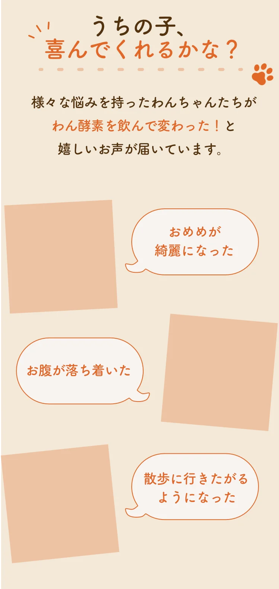


購入前によくいただくご質問
FAQ
1日に与える量の目安を教えてください。
ワンちゃんの体重に合わせて、以下の量を目安に与えてください。
（10ml/包の場合）
・2kg以下：1/2包
・2〜5kg：1包
・5〜10kg：2包
・10〜15kg：3包
・15〜20kg：4包
使い切りやすいレトルトパウチですので、新鮮な状態で与えられます。
「10年熟成」や「低分子化」とはどういう意味ですか？
100種類以上の素材を10年以上かけてじっくり発酵させることで、
栄養素が「これ以上小さくできない」というレベル（低分子）まで分解されています。
そのため、消化能力が落ちたシニア犬の胃腸にも負担をかけず、
素早く栄養を吸収できることが大きな特徴です。
薬を服用中ですが、併用しても大丈夫ですか？
わん酵素は食品（発酵補給食品）ですので、
基本的には問題ありません。
ただし、通院中や投薬中の場合は、
念のため原材料名が記載されたパッケージを
かかりつけの獣医師に見せてご相談いただくことをおすすめしております。
保存料や着色料は入っていますか？
いいえ、一切使用しておりません。
厳選された素材を農薬除去した上で使用し、
発酵の力だけで仕上げています。
毎日安心して「当たり前の習慣」として取り入れていただけます。
はぐみ酵素ってなんですか？
はぐみ酵素は、100種類以上の植物原料を長期間発酵・熟成させて作られた、人用の発酵健康補助食品です。
わん酵素の開発元であるエリカ健康道場が製造しており、多くのお客様にご愛飲いただいています。
今回のモニター企画では、「飼い主様にも発酵の力を体感していただきたい」という想いから、わん酵素と一緒におまけとしてお届けしています。
※はぐみ酵素は飼い主様向けの商品です。ワンちゃんには与えず、飼い主様ご自身でお召し上がりください。
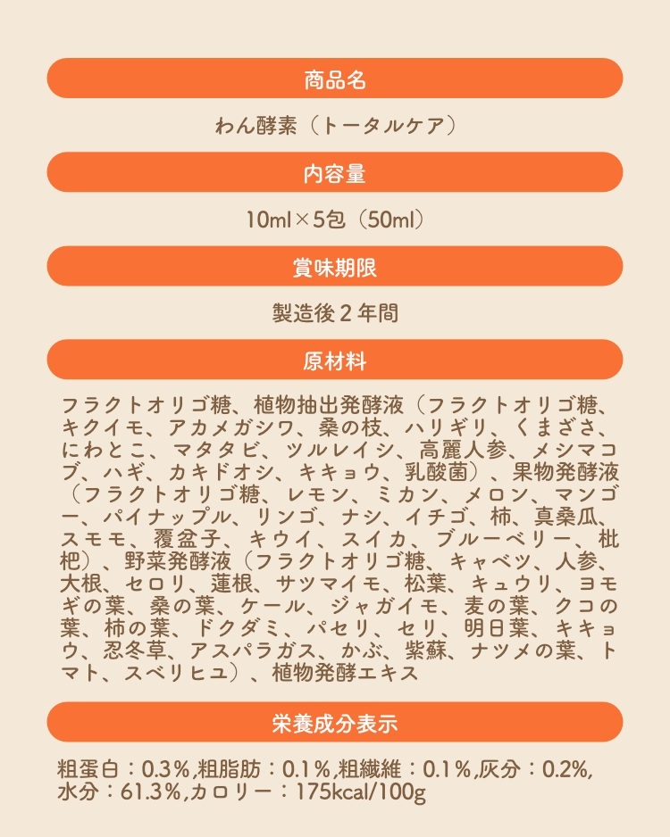

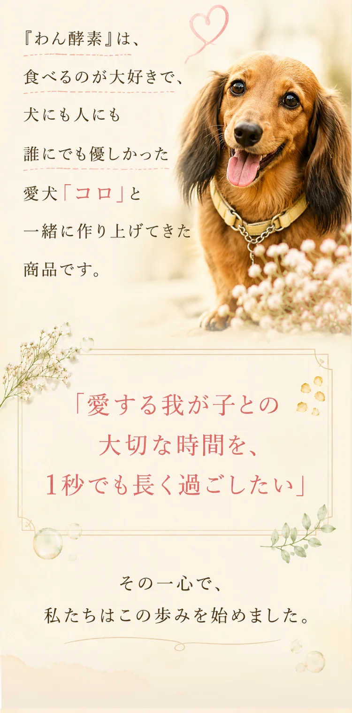
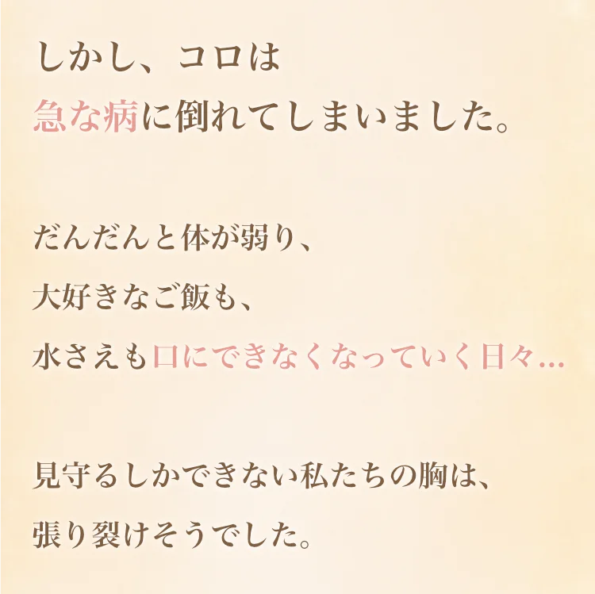
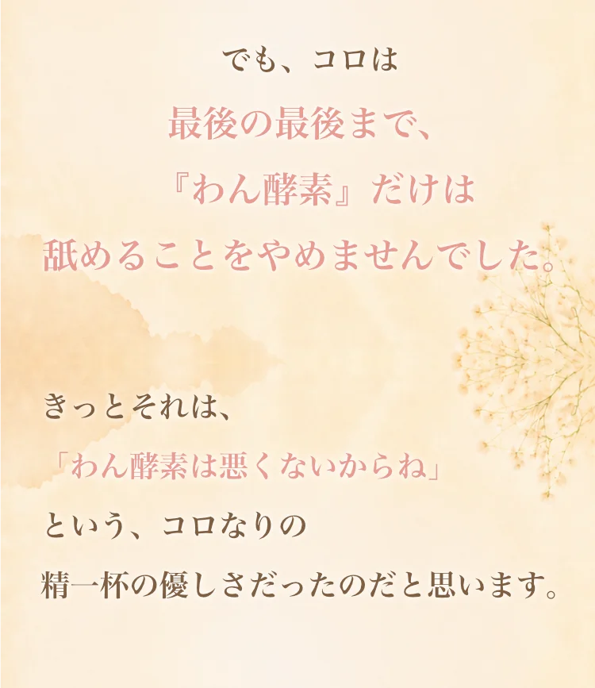
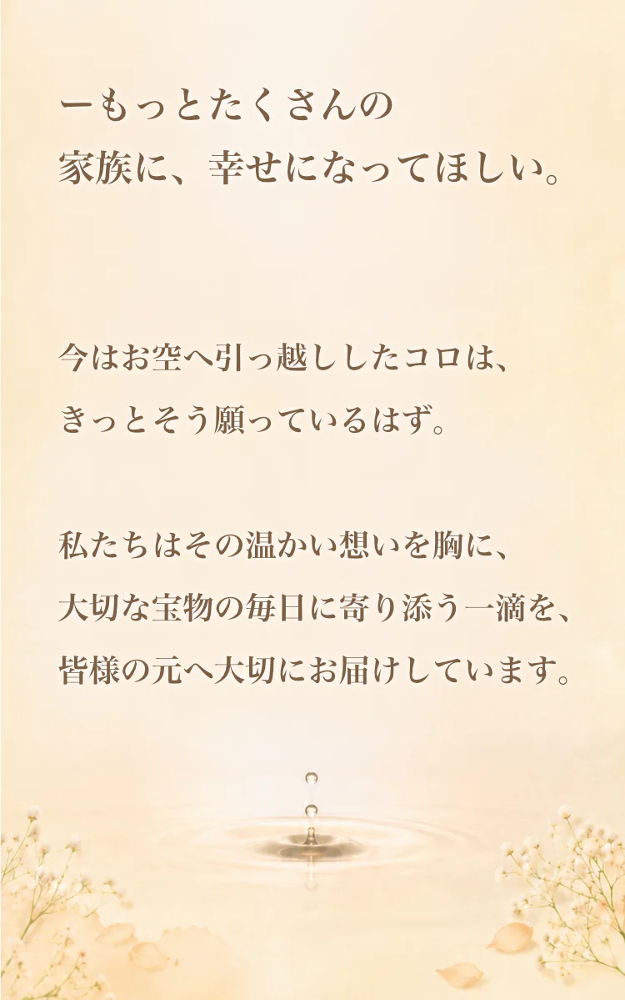
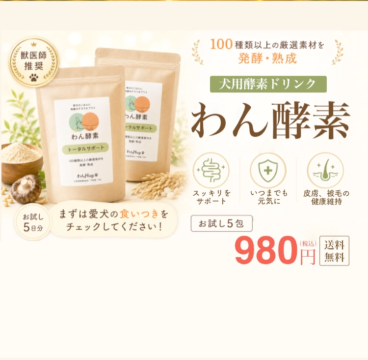